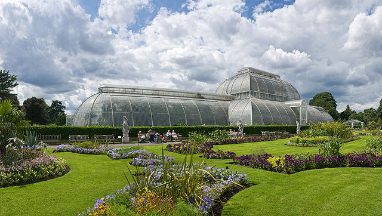

Kew Gardens is the world's largest collection of living plants. Founded in 1840 from the exotic garden at Kew Park in the London Borough of Richmond upon Thames, UK, its living collections include more than 30,000 different kinds of plants, while the herbarium, which is one of the largest in the world, has over seven million preserved plant specimens. The library contains more than 750,000 volumes, and the illustrations collection contains more than 175,000 prints and drawings of plants. It is one of London's top tourist attractions. In 2003, the gardens were put on the UNESCO list of World Heritage Sites.
